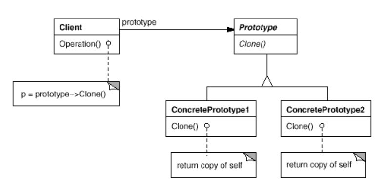

浅谈设计模式十六: 原型模式(Prototype)
Table of Contents
实例
有一个系统中有很多系统配置和用户简况：
- 初始读取配置或用户简况需要花一些时间（比如用一些系统调用或读取数据库等），但并非实时数据，只需初始化读一编;
- 因为众多系统配置和用户简况需要初始化，每次手动初始化比较繁琐，希望能一个类其中管理并快速创建实例
那么如何能不每次手动初始化对象，并能克隆初始化的数据到新的实例呢？
原型模式(Prototype)
目的
使用一个原型的实例来创建一些特定的对象，然后当创建这些新的对象时通过拷贝这个原型。
实现
使用原型模式：
- 第一次花一段时间初始化系统配置和用户简况的数据，存入相应的变量内;
- 原型管理类其中管理需要克隆的类，直接克隆初始化好的实例的数据变量值，不再需要去或系统调用或读取来初始化数据。
- 客户直接使用原型管理类获取实例，不再需要手动实例化它们。
定义原型抽象接口
为克隆声明一个接口。
class Prototype { public: virtual ~Prototype() {} virtual Prototype* Clone() = 0; };
系统配置类继承原型基类
class Configuration : public Prototype { public: virtual ~Configuration(); void GetFileInformation(); virtual Prototype* Clone(); void ShowInformation(); private: string file_information_; };
用户简况类继承原型基类
class UserProfile : public Prototype { public: virtual ~UserProfile(); void GetDatabaseInformation(); virtual Prototype* Clone(); void ShowInformation(); private: string database_information_; };
原型管理类管理原型克隆
AddPrototype 添加原型实例， GetPrototype 克隆原型实例返回新的实例。
void PrototypeManager::AddPrototype(Prototype *p, int index) { (*prototype_map_)[index] = p; } Prototype* PrototypeManager::GetPrototype(int index) { return prototype_map_->at(index)->Clone(); }
总结
原型模式(Prototype)结构

组成
- 抽象原型类（Prototype）为克隆声明一个接口。
- 具体原型类（ConcretePrototype）实现自我克隆的操作。
- 客户类（Client）通过要求原型类克隆自己来创建新的对象。
应用场景
使用原型模式当一个系统需要独立与它的产品如何创建，组成和表示，而且
- 当这些类在运行时被指定初始化，比如，通过动态加载，或
- 为了避免创建一个与产品类层次相平行的工厂类层次时，或
- 当一个类的实例能有许多不同状态组合中之一时，创建相应数目的原型并克隆它们比手动实例化它们更方便些。
缺点
原型模式的主要缺点是每个原型类的子类必须实现 Clone 操作，这可能很困难。例如，新增 Clone 操作是困难的当所考虑的类已经存在。实现 Clone
操作可以很困难当内部包含不支持拷贝或有循环引用的对象时。